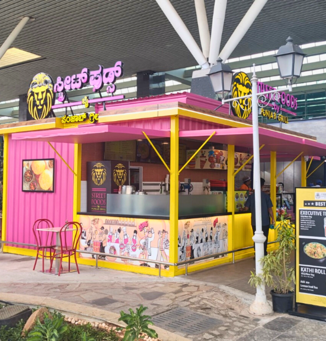
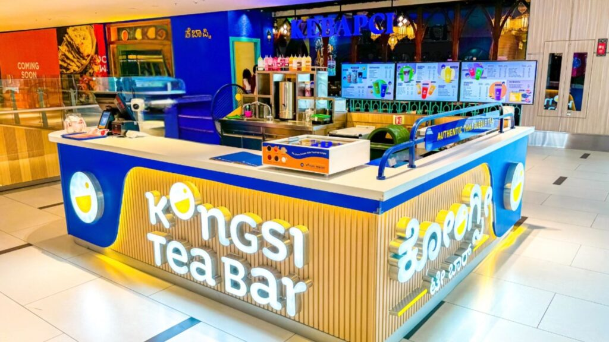
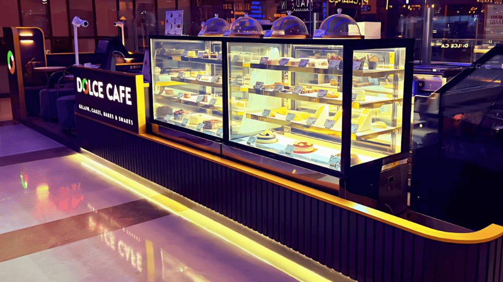
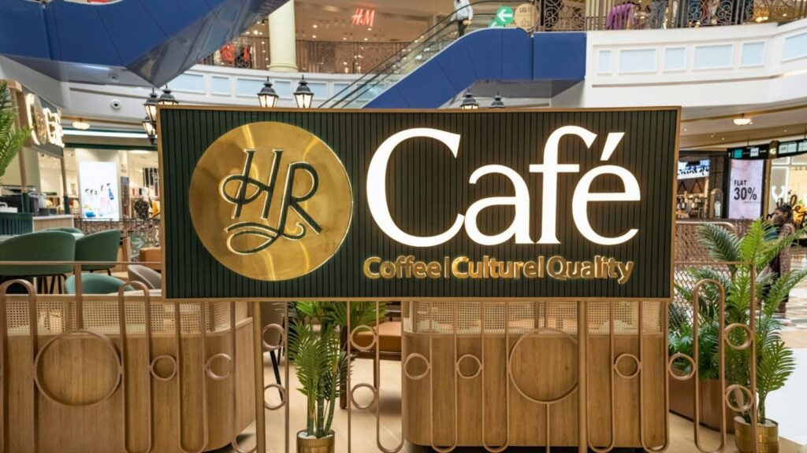
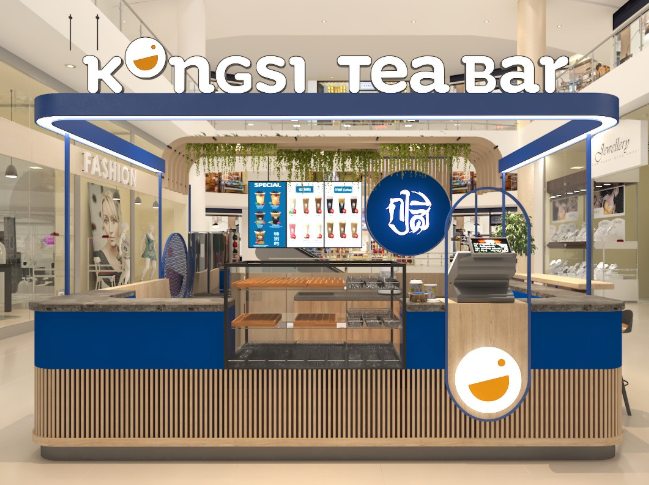

Introduction: Turning Heads, Capturing Attention
In high-traffic areas like malls, airports, and busy public spaces, kiosks face fierce competition. With limited space, short customer attention spans, and surrounding distractions, standing out can be a challenge. This is where visual merchandising becomes your secret weapon.
The right mix of lighting, signage, product placement, and colour psychology can transform your kiosk from a mere stopover to a high-performing sales hub. For kiosk owners and entrepreneurs looking to scale across multiple locations, mastering visual merchandising isn’t optional—it’s essential.
1. Lighting: Setting the Stage for Sales

Lighting isn’t just functional; it’s emotional. The right lighting can draw attention, highlight products, and even influence purchase behaviour.
Key Strategies:
- Spotlights for Hero Products: Use focused lighting to highlight bestsellers or promotional items. This creates a visual hierarchy, guiding customers to high-margin or new products.
- LED Strip Lighting for Display Shelves: Illuminate shelves with energy-efficient LED strips to ensure products are well-lit and appealing, even in low-light environments like malls or airports.
- Warm vs. Cool Lighting: Choose lighting based on your product type:
Pro Tip: Use dynamic lighting that changes subtly throughout the day to keep your kiosk visually engaging for repeat visitors.
2. Signage: Speak Loud Without Saying a Word
In crowded spaces, your signage is your voice. It needs to grab attention, convey your brand, and direct customers—all within seconds.
Key Strategies:
- Bold, Clear Branding: Ensure your logo and brand colours are prominently displayed. Consistent branding across multiple locations builds familiarity and trust.
- Digital Menu Boards: For food kiosks, digital boards allow for flexibility in showcasing menus, promotions, or seasonal items.
- Directional Signage: If your kiosk is part of a larger space (like a food court), use arrows or floor decals to guide traffic to your location.
- Call-to-Action (CTA) Signage: Use phrases like “Try Today!”, “Limited Offer!”, or “Grab & Go!” to create urgency.
Pro Tip: Incorporate motion-based digital signage to attract attention. Moving visuals stand out in busy environments.
3. Product Placement: Make Every Inch Count

With limited real estate, how you display your products can make or break sales.
Key Strategies:
- Eye-Level is Buy-Level: Place your bestsellers or high-margin items at eye level to ensure they’re the first thing customers notice.
- Rule of Three: Group products in threes for a visually pleasing arrangement. For example, display three sizes, three flavours, or three variations.
- Rotating Displays: For kiosks in high-traffic areas, keep the product display dynamic. Rotating items weekly or monthly creates novelty and encourages repeat visits.
- Upselling Zones: Dedicate a small section near the payment area for impulse buys, such as smaller items or add-ons.
Pro Tip: Use transparent displays or open shelving to make the kiosk look more spacious and inviting, avoiding visual clutter.
4. Color Psychology: Influence Without Words
Colours do more than decorate—they communicate emotions, attract attention, and even drive buying decisions.
Key Strategies:
- Red for Urgency: Use red sparingly to draw attention to discounts or limited-time offers.
- Yellow for Cheerfulness: Add pops of yellow to evoke optimism and friendliness, ideal for food and beverage kiosks.
- Green for Freshness: Green works well for health-focused kiosks or eco-friendly brands, signalling freshness and sustainability.
- Monochromatic Palettes for Premium Appeal: For tech or high-end products, stick to minimalist tones like black, white, and grey to communicate sophistication.
Pro Tip: Keep your colour scheme consistent across locations to reinforce brand identity, but adapt slightly to suit local preferences or cultural nuances.
5. The Power of Storytelling Through Design

Beyond aesthetics, your kiosk design should tell a story. Customers resonate with brands that feel authentic and relatable.
Key Strategies:
- Localized Themes: For multi-location kiosks, adapt your design to reflect local culture or landmarks while keeping core branding consistent.
- Interactive Elements: Add touchscreens, live demos, or QR codes for an interactive experience that enhances storytelling.
- Seasonal Displays: Incorporate seasonal elements (e.g., holiday themes, and summer vibes) to keep your kiosk relevant and engaging throughout the year.
Pro Tip: Create a “signature look” for your kiosks that’s easily recognizable yet flexible enough to adapt to different locations.
6. Scaling Visual Merchandising Across Locations

When scaling kiosks, maintaining consistency in visual merchandising while adapting to unique locations is crucial.
Key Strategies:
- Standardized Design Templates: Develop a design and merchandising blueprint that can be easily replicated across locations.
- Location-Specific Customizations: Factor in foot traffic patterns, local culture, and competitor presence to tweak visual merchandising for each site.
- Centralized Vendor Relationships: Work with trusted vendors for signage, lighting, and display units to ensure uniform quality and branding.
Pro Tip: Use a digital platform to manage visual merchandising remotely, ensuring consistency while allowing for quick updates.
7. Metrics That Matter: Evaluating Success
To ensure your visual merchandising strategies work, track key performance indicators (KPIs).
KPIs to Monitor:
- Sales Conversion Rates: Measure the percentage of visitors who make a purchase.
- Dwell Time: Track how long customers spend at your kiosk. Longer dwell time often correlates with higher sales.
- Foot Traffic: Use sensors or heatmaps to gauge how many people pass by your kiosk and how many stop.
- Revenue Per Square Foot: Optimize your layout and merchandising to maximize returns on limited space.
Pro Tip: Regularly A/B test signage, lighting, and product placements to identify what drives the best results.
Conclusion: Visual Merchandising as a Competitive Advantage
For kiosk owners and QSR entrepreneurs scaling across locations, visual merchandising is more than just decoration—it’s a business strategy. The right design elements don’t just attract attention; they create memorable experiences that drive sales and build brand loyalty.
In high-traffic areas, every second and every square inch matters. With the right combination of lighting, signage, product placement, and colour psychology, your kiosk can become a standout destination—even in the busiest of spaces.